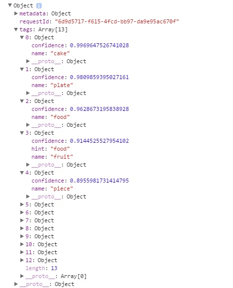

We went through and rebuilt calling the Analyze Image algorithm using XMLHttpRequest and AJAX. This time, we're going to take what we've learned and apply it to Tag Image. Tag Image analyzes the image the same way as Analyze Image, but returns a list of tags that are relevent to the content of the image. Since the Microsoft documentation doesn't contain a good source code for this, we'll apply it to what we've learned to a POST call for image tags.
To call Tag Image, all you do is change the URL in the POST call. Everything else can be kept the same. While you could access Tags in the prior Analyze Image call in visualFeatures, utilizing just Tag Image will return a response that is strictly for tags only. This can be good if the application you want to create just requires Tags.
Changing the URL will result in just tag results being returned back. We can see that in the image below, showing the tags that the image found. Notice how it's the same tags as the ones in Analyze Image in the visualFeatures object.
To access the specific tags, we can call response.tags[0] where the 0 can be any number tag in the object. To access the name, you use ' . ' notation then name; to access confidence, use ' . ' notation then confidence. For example, you can call response.tags[0].name or response.tags[1].confidence to access those values.
That completes the How-To-Guide on using Microsoft's Computer Vision API. You now have the tools to get your own subscription key, create a XMLHttpRequst object to send a POST body call to the API's server, read the JSON response back in the console and access specific values utilizing specific notation. In addition, you can apply it to all the other Computer Vision API calls by just changing the URL, just as Describe Image, Get Thumbnail, and Tag Image. I hope this was a helpful guide to getting started on using Computer Vision API and all of it's features. Good luck!